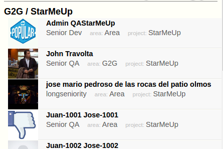
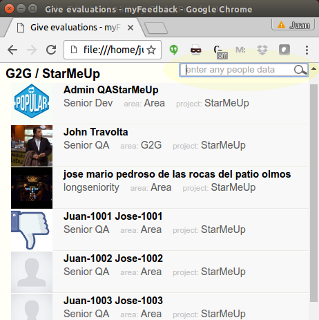
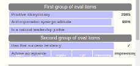
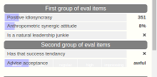
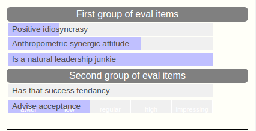
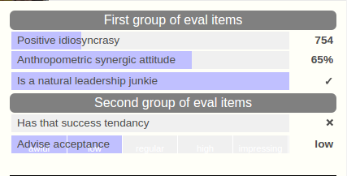

MF wireframe prototype
This document expresses the motivation behind many of the design decision made, and provides some usability background when it's pertinent.
The work was focused on the task of giving evaluations or feedback.
This was done so because this interaction context is expected to be the most used, in terms of man-hours, and as such it deserves the most elaborate and tested UI.
The evaluees list

It is structured as a succession of named employee sets, in this case the first one is "G2G / StarMeUp", the name of a team.
Notice that it's not labeled "team name: G2G / StarMeUp" because those who are involved already know that this is their team name so the label would be not only superfluous but almost insulting.
It doesn't need to be a team, it should be possible to summon employees with any criteria, like for example an SQL query. The criteria should be as elastic as the variability expected on the field.
Sometimes it will be teams, but it might also be "managers above a certain level" or "those who work in a location"...
The list is lean, lacking any unnecessary elements like frames or backgrounds. Although this is not to be considered design but wireframe, eventually the designers that will style this application should be instructed to keep it minimalistic.
This is desired in order to reduce cognitive load. A user exposed to an interaction context (like a screen) has to grok it at a glance, mentally processing its geometric structure. The more elements the UI has, the higher the effort to build a mental map for it. The user is not aware of this, but higher cognitive loads make her tired sooner that if the UI is leaner.
The evaluees are arranged, thus, in a single and simple column that can be scanned with a single vertical sight swoop. Names are left-aligned in order to ease this task.
The names are somehow highlighted, or better, the other ancillary stuff is subdued, so it doesn't interfere with the names. Ultimately, when the user has found the name she's looking for, she'll be able to find the evaluee's properties (displayed in smaller, lighter, typography).
Below the evaluee's name a few properties are shown, as few as possible. Labels are avoided, like for example before the seniority, because it's obvious. The labels actually shown are less prominent than the data they name: the data is important, not the labels. Showing the labels like this paves the way for the user not needing lo look at them in the future; we humans locate things by their position not their labels. And after using a UI like this, the user will not look at the labels any more. On the contrary, if labels and data were displayed with similar visibility, the user would be forced to read both in order to be able to parse the parts.
Click on the evaluees list
When the mouse pointer hovers an evaluee's data, it becomes the usual pointing hand. This is enough for the user to realize that in order to do things with that employee she should click on it.
The click target is generously bit, to ease its capture.
Clicking either the picture or the data, the evaluee's info scrolls until it's flush with the wiewport top edge, and the eval items interaction context slides from its bottom.
It is done with a quick animation. Quick to avoid wasting the user time, but animated she can visually control what was the effect of the click.
Search the evaluees list

There is a search minimalistic box at the top right corner of the screen, and it stays there - which is possible because it's so slim.
Typing anything there immediately triggers a quick search hiding all the evaluees that do not contain the typed text.
The search mechanism is nimble. It selects the items that contain all the words or partial words entered in any order, in any of the users file fields, after a short delay to allow the typing to finish.
For example entering "joh" selects John Travolta, Daniel Johnson and John Smith. Typing "mondongo" selects John Travolta because he has that word in his file.
The eval items context
It contains controls suitable for assigning values to named features. The controls are grouped by visually distinctive headers (shown in white text on gray background).
All the evaluation value controls are horizontal bars of equal length.
The eval item name is set on the bar; the value is rendered as a blue background spanning from the left, proportional to the assigned value. For example if an evaluee was given a 33% of a quality that is expressed as a percent, then the left third of the related bar will have blue background.
This arrangement allows for a manager to quickly grasp an employee's level, by weighting the amount of blue in her evaluations block.
 
The images above depict two evaluations, one full of blue corresponding to a good employee, and the other short of blue for a candidate to be fired soon.
The design structure allows for this to happen.
The eval items
In this example there are different evaluation item controls, reflecting different criteria for measuring each one.
1: { id:'1', type:'header', description:'First group of eval items' },
2: { id:'2', type:'number', description:'Positive idiosyncrasy', topValue:'3000' },
3: { id:'3', type:'p100', description:'Anthropometric synergic attitude' },
4: { id:'4', type:'binary', description:'Is a natural leadership junkie' },
5: { id:'5', type:'header', description:'Second group of eval items' },
6: { id:'6', type:'binary', description:'Has that success tendency' },
7: { id:'7', type:'step', description:'Advise acceptance', steps:['awful', 'low', 'regular', 'high', 'impressing'] },
8: { id:'8', type:'spacer' }
The types shown are a number, a percent, a yes/no option, and an enumerated choice. The definitions are shown above.
This is one evaluation criteria. There might (and will) be more than one. Like for example a company will likely use different criteria to evaluate managers, clerks, blue-collar workers, gardeners, salesmen, etc. It's wishful thinking to ask a company to evaluate all their employees with a single criteria (unless it's a small company with a very homogeneous staff).
Anyway, whatever the evaluation criteria, the more the blue, the better the employee, at a glance.
Evaluated or not
Each new evaluation appears loaded with the previous evaluation's values in the graphic bars, but the value are not displayed in the textual values column on the right side of the bars, as shown in the image below. This employee is not yet evaluated.

The user has the previous evaluation as a guideline. She can set the values using the mouse (clicking on the desired position of the bar) or textually (clicking on or tabbing to the textual display and entering a value).
After the values are entered, the employee is effectively evaluated and the values are displayed in the textual values column, as shown below:

In the evaluees list, those who are already evaluated depict a big checkmark \u2713 on the right hand side of the data area, or a lighter (\u2705 hollow) checkmark if the evaluation is not yet complete.
✓ ✅
Also the header items should display complete indicators when all the required eval items under are already done. This is to save the user the task of having to scrutinize many detail-level items when trying to find out what's missing.
Also it should be evident for the user which eval items are optional and which are not. One simple way would be to change the eval item name typography, like for example change its color or make it italic.
The context menu
Most of the times the user would only want to set evaluation values for users she already knows, using evaluation criteria she's comfortable with.
But, there will be a few cases, like rookie evaluators or newly added evaluees, that will deserve more on-screen information.
For these cases there should be contextual menus (not implemented) allowing, for example, to pop up illustrative windows and more actions.
One typical action here is to cancel an evaluation of an item. This is sipposed to seldom hapen, so we are better off with a hidden menu option than by spreading crosses all around the screen.
Keyboard input
If the application is really to be used in any company bigger than a startup, there will be mid-level managers chartered with the routine evaluation of their crew possibly prolific.
This warrants the implementation of a really sound keyboard input feature, in order to allow them to sort through this task swiftly. It doesn't matter if they can't grasp the kb operation initially, they will want to do later (keep in mind that many of these managers were clerks until recently).
Clumsyness of the UI is a lofty rejection factor for an application, and the LB input feature is an important nimbleness factor for many, if well done.
Architecture suggestions
We developers have a heavy tendence towards self-referential design (SRd).
It's a deviant design schema that can be expressed in brief thus: "If it's good for me then it's good, period".
This contradicts with the "The customer is always right" principle in that, under SRd, the customer will happen to be wrong most of the times.
Actually, we will be thinking our way while the customer tries to explain us their needs and cravings.
A good stance, based on my experience (about 30 years selling ready-made software to big companies), is to expect anything.
It is not surprising that many of the most successful software constructs are designed with that openness of mind. Think Eclipse, Visual Basic and Visual Studio, facebook, vim, Apache, firefox, Linux, you-name-it.
It's not a matter of size, but the ability to allow the user to configure and add plugins at will, until the thing works as expected, fulfilling the user's particular and unique requirements without needing to twist their arms, at all.
Objects
There are a few undeniable and inmutable facts. We need to identify them. These facts can be reduced to a list of objects. There will be ...
- users (people) with a variety of properties like cost center or area or project, and seniority or category or grade or whatever, each client using their owm schemata
- evaluee sets, generically made out of a query selecting a team, an area, a project, a country, a branch, a gender, an age span, or whatever
- evaluators, defined as users wuth a scope made out of one or more evaluee sets
- evaluations, made up of evaluation criteria (not necessarily a single one) and not necessarily organized in a hypercubic hierarchy
- an evaluation criteria will be made up of a set of criterion iitems
- eval items will have different forms, like numbers, percents, yes/no's, free text, enumerated, and more that are to come
- eventually cycles or periods for clients that want to enforce a rythm, or the lack of them but maybe a frequency requirement not tied to timeframes
The general idea is to be as generic as possible, and to become specific by means of sensible defaults and smart customization. Defaults shold be good for smaller companies.
Any worthwhile company will be glad to shell a check for our work on setting up the application, and this would also be useful to us for the purpose of learning more about the generalized client needs, also known as software requirements. In my experience, it was never possible to anticipate all the client requirements up front.
Modularity
The software must be modular, allowing for the upcoming developer generations to keep pluging in new modulii at specific points.
Like for example to make easy to store, handle and display a (not predefined) variety of evaluee properties, or new eval item types.
Also, the system must have the ability to plug into the client's services in order to get data - maybe not storing it in our application, or send email to the employees. This would enable access to big companies, the worthwhile kind of client.
 tasks
tasks
This is a local todo list.
- Add a new textual eval item type
- Generate the eval items UI dynamically
- Refactor hover handlers so they work on dynamically
generated eval items:
- Refactor the handlers setting into a function in the GE namespace
- Set handlers on when the UI is created
- Set handlers off when the evals input UI is destroyed
- Use namespaces event names to avoid eventually wrecking havoc
- Whenever a value is changed check if the eval sets are complete and display a ✓
- Add a quicksearch widget for the evaluees list
- Add an "evaluation complete" marker in the evaluee's data
- Add an "evaluation complete" marker at the eval items group data (in header items)
- Add an "all evaluations complete" at the evaluees group level header
- The scroll evaluee to top should not happen upon clicks in eval items zone
- Further develop the keyboard input
handling
- Add a focusable but not visible element in the user header
- Upon focus on a user header, give it a kb event handler, and remove it upon blur Set permanent event handlers at the evaluee set container level
- Upon spacebar in the header reveal the eval items UI
- Upon alt-↓ in the header reveal the eval items UI
- Have an editable element in each eval item
- Process keyboard events for each
eval item type
- Filter input, depending on eval item type, allowing only numbers or whatever appropriate for each
- Upon tab on the last eval item close the UI and proceed to the next user's
- Upon tab on the first eval item close the UI and proceed to the previous user's
- Implement nudging of the values by the +/- and arrow ←/→ keys
- Implement movement to the next/previous eval item by the arrow ↓/↑ keys
- Whenever an input is focused by tabbing into it, select its content
- Add code to store the newly entered values
- Prevent pasting into contenteditable elements
- Remove error marker class from valus display when the value is changed using the mouse (will always be right)
- Do something so that lengthy step-type cell labels text can wrap in a controlled fashion
- Upon hover on a step-type eval item, make the name almost transparent, to ease the reading of the step labels
- Step-type items: handle kb input inside options list
- Move focus with ↑ and ↓
- Set input text with spacebar
- Set input text and leave with enter
- Reflect the selected value in the graphic bar
- Remove event handlers on focus out
- Add a refrence to the current evaluation into the eval item objects
- In the eval item objects, add a method to synchronize the value in the UI with the value in the evaluation object
- Define eval data structure inside the eval item objects:
In the objects where it's relevant, a member is an object that can hold a number of properties, the most relevant are value and text:
- value: the actual evaluation value, a number
- text: the value formatted to be displayed
- hasValue: a boolean stating that this eval item has been assigned
- Store kb-changed values into the eval object
- Reflect kb-entered values in the approrpriate gaphics bar
- Not destroying the input UI of an evaluee (allowing more than one at a given time) might result in duplicate DOM ids
-
Refactor eval items into classes, one per eval item type:
- Create an
eval item object whenever an eval item is built by GE.evalItemsBuild()
- header type items
- number type items
- percent type items
- step type items
- binary type items
- spacer type items
- Instead of building the UI as an HTML text, build it as a set of elements initially decoupled from DOM, and attach them at the end, in order to be able to create references to the parts of an item
- Store a ref to the eval item object in the jQuery data attribute of the eval item HTML element
- Properties:
- type
- hasValue
- value
- text
- valuePrevious
- Methods:
- reflect the eval item value in the HTML element's graphic bar
- text (calculate it on the fly vs. storing a property?)